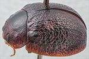
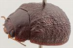
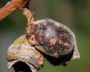
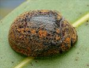
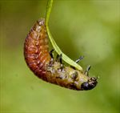
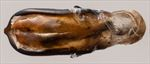
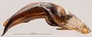
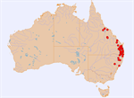

Click on images to enlarge
.jpg){kind=link}

Female, Crows Nest, S.E. Queensland
{kind=link}

Female, Clermont, central Queensland
{kind=link}

Female, Armidale, New South Wales
{kind=link}

Female, Collinsville, central Queensland
{kind=link}

4th instar larva, Guyra, N.E. New South Wales
{kind=link}

Aedeagus, dorsal view (Amamoor, S.E. Queensland)
{kind=link}

Aedeagus, dorsal view (Amamoor, S.E. Queensland)
{kind=link}

Distribution
Name
Trachymela piceola (Chapuis)
Reference specimen
2003-080a, Crows Nest, SE Queensland.
Adult Description
Length: ♂ (6.9)7.7–9.1 mm (n=34), ♀ 8.1–9.8 mm (n=48).
Colouration:
- Head: Usually uniformly mid- to dark brown, very rarely with front of head, behind labrum and in front of clypeal suture, darker; mandibles dark brown with black tips; antennomeres generally uniformly straw-brown, less commonly grading to a slightly darker brown towards apical antennomeres, distal edge of outer antennomeres often darker.
- Pronotum: Brown, concolorous with or fractionally darker than rear of head, with disc and adjoining posterior margin darker than lateral marginal areas (very rarely almost black) with a gradual gradation in shade between the two regions.
- Scutellum: Dark brown, concolorous with adjacent region of pronotum.
- Elytra: Brown, mostly concolorous with or fractionally lighter shade than darkest region of pronotum, with indistinct patches and flecks of slightly lighter colour usually present and distributed so as to give a somewhat "speckled" appearance, the larger of these patches situated along the elytral margin and another centred on antero-median depression; punctures are concolorous with or a fractionally lighter shade than interstices; humeral callus dark brown or black, concolorous with surrounding area.
- Venter & Legs: Dark brown with lateral extremities of ventrites and distal leg segments often a slightly lighter shade; elytral epipleura brown.
- Cuticular Wax: Light brown to orange-brown, with a very patchy distribution – concentrations are present in two patches on the head, along the lateral margins of the pronotum, in a thin band along lateral margins of elytra (in the sub-marginal sulcus), 2 small patches at base of each elytron, and in the small depression just posterior and above each humeral callus; many specimens also have smaller patches arranged in 2–4 longitudinal lines from about middle of elytron towards apex; elsewhere the cuticular wax is very thinly distributed and may be of a lighter shade.
Morphology:
- Head: Punctures moderately large (pd ≈ 2–2.5× ef) and slightly unevenly and densely distributed, interstices sometimes rough. Antennae short (AL/BL: ♂ 37–39%, ♀ 33–36%), filiform.
- Pronotum: Almost evenly curved transversely, foveal depression absent, instead epidermis there slightly elevated in a broad circular area, discal area with surface very slightly uneven, nitid, and puncturation clearly impressed with punctures similar in size to those on head, evenly to very slightly unevenly distributed and relatively dense (spacing ≈ 1.5–2 pd), becoming noticeably coarser towards lateral margins. Front margins join lateral margins in a smoothly rounded right-angle, with lateral margin curving smoothly and gradually towards rear margin, broadest about 2/3 of distance to posterio-lateral angle.
- Scutellum: Unpunctured or with sparse, fine and unevenly distributed punctures, smaller than on pronotum.
- Elytra: Surface evenly curved, punctures surrounded by very convex interstices, closely spaced and rather evenly distributed, interstices are thickened in many places forming small elevated verrucae at their intersections joined by short elevated ridges that may be oriented longitudinally or transversely, forming a complex granular surface, surface appears even more granular in posterior third due to closer spacing of punctures, punctures are usually more clearly defined but smaller in a smooth area straddling the elytral summit, elytral suture not carinate, posterior third of marginal area slightly to moderately concave, surface discontinuous under humeral callus. Vertical extension of epipleura relatively small (HCE/PW = 0.33–0.35).
- Venter: Prosternal process almost parallel or narrowing anteriorly, closed anteriorly, at most a very sparse scatter of setae present along prosternal process and on mesoventrite, a single long seta present on anterior, median and posterior trochanters; front edge of metaventrite beveled, flat; inner edge of posterior of epipleurae lacking setae.
Male Genitalia (Aedeagus):
- Dimensions: Relatively short (LPE/BL = 28–32%).
- Dorsal view: Shaft approximately parallel-sided or very slightly sinuate with maximum width around posterior of ostium (WPE/LPE = 0.29–0.34) from where sides converge smoothly and gradually towards apex, tip a truncated triangle, dorsal surface lightly sclerotized, dorso-median channel present but often short and poorly defined, ostium relatively large.
- Lateral view: Shaft quite evenly and continually curved over whole length, tip deflexed.
Immature Stages
- Eggs: Unknown.
- Larvae: Illustrated.
Similar species
- Ta31: Has a very similar wax distribution as Ta23, but differs from it by its smaller size, by having a more pronounced contrast between the pale and dark coloured areas on the pronotum and elytra, with a thin pale line at centre of disc of pronotum usually dividing the black colouring of disc. It also has a less robust aedeagus.
- Ta21: Occurs in the higher altitude areas of the New England Tablelands. Due to its similar marginal pattern of wax distribution, it can closely resemble Ta23. It can be immediately differentiated from Ta23 by its black epipleura. In addition, the dorsal surface is much darker and more densely punctured on the elytra, with interstices more rugose than in Ta23, the area in front of clypeus is usually black, the outer segments of the antennae tend to be black, the pronotum is almost uniformly dark brown or black and it usually has a relatively large, black area straddling the elytral suture at its highest point. The aedeagus of Ta21 has a slightly more slender shape.
- Ta170: Another species that closely resembles Ta23 due to the similar distribution of cuticular wax and its brown epipleura. The lighter-coloured area on elytra situated at centre of antero-median depression tends to be much smaller in Ta170 than in Ta23, and the former species has a clearly defined row of small patches of cuticular wax (or lighter-coloured patches where cuticular wax is not present any more) running posteriorly from the larger patch in the antero-median depression. The widest point of the aedeagus is closer to the apex in Ta170, thus making the apical section more strongly rounded.
- Ta171: Occurs in southern New South Wales and Victoria and differs from Ta23 by the possession of moderately-sized verrucae over much of the elytral disc.
- Ta15: This South Australian species differs very little from Ta23. It is more uniformly dark overall, lacking the paler lateral marginal areas of pronotum and the paler areas on the elytra. Its aedeagus, though rather similar in both shape and dimensions, does not have a truncated tip.
- Ta178:
Notes
- Taxonomy: Identification as T. piceola (Chapuis) is by comparison with specimens labelled as such (though not the type) in the Natural History Museum, London (BMNH) and so it is not at all certain. It is one of a group of species that are characterized as live specimens by the marginal pattern of distribution of the (usually orange-brown) cuticular wax.
- Host Associations: Ta23 seems to feed mostly on the red-gum group of Eucalyptus (Symphyomyrtus : Exsertaria), including E. tereticornis (13 records), E. camaldulensis (1 record), E. platyphylla (2 records) and E. blakelyi (1 record). Other records are from E. moluccana (1 record), E. viminalis (2 records), E. platyphylla (2 records) and E. cambadgeana (5 records). Records where the host is not identified to species include almost exclusively smooth-barked Eucalyptus (9 records).
- Morphological Variation: Several specimens from central Queensland have been collected from E. cambadgeana (Symphyomyrtus : Adnataria) on multiple occasions. These show consistent, though slight, differences from typical Ta23. The puncturation of the pronotum is much more deeply impressed, regular and dense than is typical in Ta23, the gradation from a very dark disc to contrasting paler margins is also much less evident in these specimens and the elytral post-basal depression tends to be consistently smaller than in typical Ta23. The aedeagus of the single male is slenderer than is typical of Ta23 but fits into the range of variation for Ta23 for other measurements. These differences and the different host suggest that these specimens form a species distinct from Ta23, but more specimens are required to confirm this. A very small specimen from Cataract River (NE New South Wales), though only 6.86 mm in length, clearly has an aedeagus of the Ta23 type and its colouring dorsally is very typical of Ta23, with the disc of the pronotum much darker than the lateral margins. It is possible, but unlikely, that it is Ta178. Two specimens from North Queensland (one from E. platyphylla, the other from E. camaldulensis) differ little from typical southern Ta23, though their post-basal depression is rather smaller than typical.
Copyright © 2026. All rights reserved.